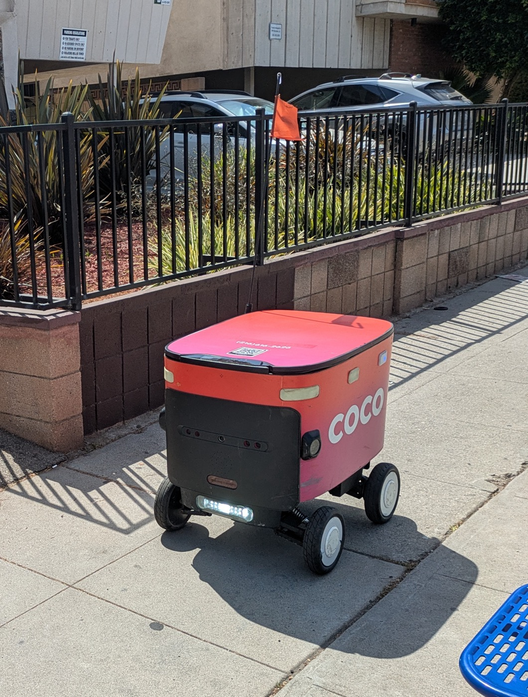
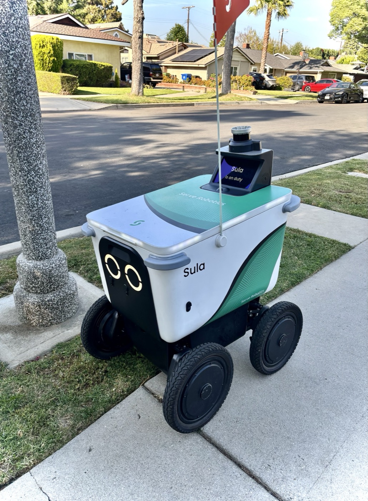

Executive Summary
This article reads the class actions that two Chicago residents filed at the Cook County courthouse on October 9, 2026. One names Coco Robotics, the other names Serve Robotics. Both companies run delivery robots that travel on sidewalks. The complaints say that the camera on a robot captured the face and hands of the person who came out to take the order, that the LiDAR sensor measured the geometry of what it saw, and that the data gathered this way was used to train AI models and shared with third parties.
The claim does not stop at customers. That is the difference between this case and the face-data suits that came before it. Both complaints say the robots also scan the faces, hands and bodies of other people they encounter on Chicago sidewalks. The Illinois Biometric Information Privacy Act, the statute the complaints rest on, requires written notice and written consent before collection, and no channel exists through which a person walking past on the sidewalk could give or refuse that consent. The two companies answer in different ways. Coco denies the facts, saying it has never used LiDAR in Chicago. Serve denies the purpose, saying it does use sensors but does not identify individuals.
Everything up to this point is what the complaints and the reporting say. The turn toward the reuse of navigation data, in the second half of Section 4 and in Section 5, is neither party's claim nor a court's finding. It is this article's reading.
Key Figures
The first number is what the statute puts on a single violation. The other three measure the mood that had built up in Chicago before the complaints ever arrived.
Sources: reporting by Block Club Chicago, the Chicago Sun-Times and CBS Chicago, and the text of the Illinois Biometric Information Privacy Act (740 ILCS 14).
$5,000
Damages per intentional or reckless violation
A negligent violation carries $1,000, and actual damages govern if they come to more
4,600+
Signatures on the petition against sidewalk robots
Block Club Chicago put the count at more than 4,500 as of last month
83%
Residents opposed to expanding robot delivery
From a survey of the 1st Ward aldermanic district, which takes in Logan Square
May 2027
Scheduled end of the Chicago delivery robot pilot
The City Council can halt it sooner or extend the term
Coco and Serve Were Sued on the Same Day
Two class actions arrived at the Cook County courthouse on October 9, 2026. Mitchell Breidinger, a resident of the Near North Side, sued Coco Robotics. Barry Schain, a resident of Lincoln Park, sued Serve Robotics. The cases are separate and the defendants are different, but the claims share almost the same frame, and the two were covered together.
How the two plaintiffs met a robot is ordinary enough. Breidinger placed one grocery order through DoorDash on September 29, 2025, and a Coco robot brought it. Schain ordered through Uber Eats three times and a Serve robot came each time, most recently on October 4, 2026. Neither of them chose robot delivery. The delivery app assigned a robot on its own, and the only way to get the order was to walk up to the robot and open the lid.

The claims rest on the Illinois Biometric Information Privacy Act, passed in 2008. A company that scans face or hand geometry to collect a biometric identifier has to give written notice of the collection, its purpose and the retention period, and it has to obtain written consent from the person. How the data is stored and shared falls under the statute as well. Damages run to $1,000 for a negligent violation and $5,000 for an intentional or reckless one. Meta paid $650 million to settle under this statute, which is why the name alone puts American companies on edge.
What the Complaints Describe Goes Beyond the Customer
The scene the complaints describe is specific. During the few seconds in which a person walks up to the robot, opens the lid and takes out the order, the camera captures that person's face, head and hands, and the LiDAR sensor measures their geometry in three dimensions. Breidinger's complaint adds that a remote operator was watching the delivery video live while it happened.
LiDAR fires an infrared laser and times the return to work out the distance to an object. Autonomous driving has used the device for years, and on a sidewalk robot it is the eye that tells a curb, a person and a utility pole apart. The output is not a photograph but hundreds of thousands of distance measurements, which is to say a point cloud. When the sensor runs in front of a human face, that point cloud holds the three-dimensional spacing between the features of the face. The complaints are aimed at exactly that spacing.

After the claim about collection comes the claim about use. According to the Coco complaint, the company shares the data its robots gather with OpenAI for AI training. The Serve complaint says the company licensed video and LiDAR data to third parties so they could train models of their own. One alleges a handover and the other alleges a loan, but both describe data gathered while driving ending up somewhere that has nothing to do with driving.
One sentence in the complaints did not appear in the earlier face-data suits. In the version of the allegation carried by the Chicago Sun-Times, the robots scan the faces, hands and bodies of other people they encounter on Chicago sidewalks. Not the person who placed the order, and not the person who came to the door, but people who were simply walking down that street.
One Statute, Two Different Defenses
The two companies were served on the same day under the same provision, and the answers they gave differ in kind. Coco denied the facts. Carl Hansen, speaking for the company, said the lawsuit fundamentally misunderstands its technology and that the company has not collected biometric data in Chicago, adding that Coco has never used LiDAR in Chicago at all. What the company does share is anonymized navigation information, specifically a partnership that feeds real-time sidewalk hazard information to BlindSquare, a navigation app for blind and low-vision users. Video from the start and the end of a delivery stays out of that partnership.
Serve denied the purpose. Its position is that the cameras and sensors on its robots exist to travel Chicago sidewalks safely, that it does not use that data to identify individuals, and that its systems are not designed to identify individuals or create biometric profiles. The company said it will defend against the complaint.
The difference between the two answers changes the shape of what follows. The fight with Coco goes to fact-finding. Whether the robots it ran in Chicago carried LiDAR is a question that device specifications and operating records can settle. The fight with Serve is not like that. Serve disputes neither that the sensors were there nor that data was collected, which leaves a single question: whether a point cloud captured in order to drive can count as a biometric identifier.
Few rulings have answered that question in advance. The starting point is written into the statute itself. The Illinois act lists what counts as a biometric identifier and, in the same place, lists what does not. Writing samples and signatures, photographs, demographic data, descriptions of tattoos, and physical descriptions such as height, weight or hair color are not biometric identifiers. So the line Illinois courts have drawn in face-data cases is fairly clear. Holding a photograph sits outside the statute, and running that photograph through an algorithm to obtain geometry that can recognize a person sits inside it. The line falls not on whether a company holds the data but on whether the data picks a person out.
In June 2024 the federal district court for the Northern District of Illinois dismissed a class action against X Corp, and that ruling shows how far down the line runs. The plaintiff argued that the company had run uploaded photographs through harmful-content detection software and had therefore scanned facial geometry. The court made two points. The software producing a hash from an image does not by itself establish that facial geometry was scanned, and the complaint contained no allegation that the resulting value picked out the person in the photograph. That a sensor or a program computed something in front of a person is one fact. That the computation identifies that person is another, and it has to be proven on its own. The fight with Serve is likely to be waged on that ground.
The People Whose Consent Is Needed Are Not on the Customer List
A written-consent requirement works only when the other party can be pinned down. The company has to know who that person is, it has to be able to put a document in front of them, and it has to give them a place to sign or to tap. Where the exchange happens across a screen, those conditions are usually in place. There is an account, there are terms, there is a sign-up flow.
On the sidewalk the conditions fall away one layer at a time. The scene the complaints describe divides into three layers, and at each layer a different amount of the consent channel is left standing.
Even the top row is incomplete if the two plaintiffs are right, because neither of them chose robot delivery. The platform assigned a robot the way a dispatcher assigns a car, so neither of them agreed to any document belonging to the robot operator. The middle row is looser. The person who places an order and the person who comes to the door to take it are not always the same. The bottom row has nothing left in it. A robot operator has no way to give written notice to someone walking down the sidewalk, and that person has no way to refuse.
The temperature of Chicago's reaction follows from this. More than 4,600 people have signed the petition against sidewalk robots, and in a survey of the 1st Ward aldermanic district, which takes in Logan Square and its surroundings, 83% of residents opposed expanding robot delivery. The pilot program is scheduled to end in May 2027, and the City Council can halt it sooner or extend the term. The lawsuits landed on ground that was already hot.
From here on, this is the article's reading. The consent model was designed as an agreement between a company and a person who decided to use its service. That premise shakes the moment the sensor leaves the building. A person who happened to be where the robot passed is not a user, not a customer, and not someone whose name the company could know. As long as physical AI gathers data out on the street, this gap stays open no matter how these lawsuits end.
Why Pebblous Is Watching This Case
The story usually reads as one more round of people disliking delivery robots. From where data work sits, something else comes first. It is a story about what we call the data we gathered in order to drive, at the moment we reuse that data for training.
In a robot team's data inventory, LiDAR logs usually land under sensor data. They go in the same column as camera frames, inertial measurements and wheel odometry. That classification is not wrong. To the navigation algorithm the logs are exactly that. The trouble is that the classification does not follow when the same files move into a training dataset. The use changed and the name stayed.
Serve's rebuttal is therefore honest and possibly insufficient at the same time. Saying a system was not designed to create biometric profiles is a statement about design intent. The Illinois statute asks about the nature of the output, not about the intent. Whether a point cloud taken right in front of a human face lets someone recognize that face is answered by the data and not by a design document. That is where the plaintiff in the X Corp case in Section 3 tripped.
So there are three things worth checking in the ordinary course of work. First, do the sensor logs mark off the stretches recorded while a person was close by. Second, is there a procedure that approves and records the switch when data gathered for navigation is reused for training. Third, does the design stage deal with the fact that people the consent language and the posted notice never reach will come inside sensor range. The last item has a part that technology can solve, by deleting the stretches near a person on the device itself, or by lowering the density of the points aimed at the face region before they are fired.
Korea is worth a note as well. The Personal Information Protection Act treats physical, physiological and behavioral characteristic information produced by technical means for the purpose of identifying an individual as sensitive information, and it requires separate consent. How the condition "for the purpose of identifying an individual" applies to a navigation sensor has to be worked out on its own. Korea does not have the Illinois structure, where a fixed sum attaches to each violation and an individual can walk straight into a class action. A case filed in federal court two days earlier, on October 7, under the same statute is written up in the article on the selfie uploaded to Grok. There the plaintiff was a user who had uploaded the photograph; here people who uploaded nothing at all fall inside the class.
Thanks for reading this far. The facts here were checked against the reporting by Block Club Chicago, the Chicago Sun-Times and CBS Chicago. If your team takes sensor data off a robot or a vehicle, it is worth following the path those logs take into a training dataset all the way to the end. Where they cross over, if there is no approval record with a person's name on it, that is the whole of what this article has to say. We would like to hear how your own team keeps navigation logs and training data apart.
References
News Coverage
- 1.Block Club Chicago. (2026, October 16). "Delivery Robots Accused Of Scanning Customers' Faces, Sharing Biometric Data." Block Club Chicago.
- 2.Chicago Sun-Times. (2026, October 16). "Lawsuits accuse Chicago delivery robot companies of collecting biometric data." Chicago Sun-Times.
- 3.CBS News Chicago. (2026, October 15). "Coco, Serve delivery robots' lawsuit alleges biometrics, privacy violations." CBS News Chicago.
Case Law
- 4.Martell v. X Corp., No. 1:23-cv-05449, 2024 WL 3011353 (N.D. Ill. June 13, 2024).
Statute
- 5.Illinois General Assembly. (2008). Biometric Information Privacy Act, 740 ILCS 14.